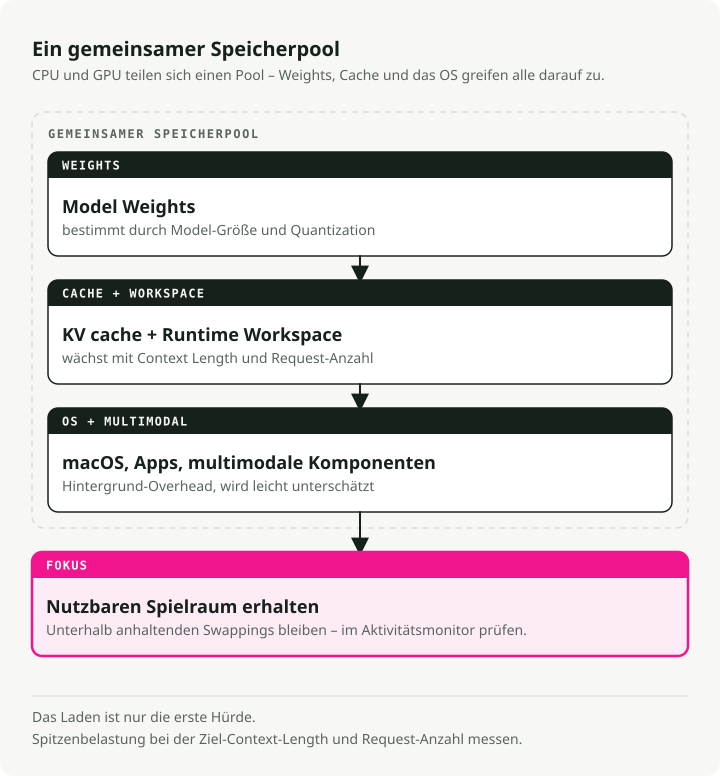
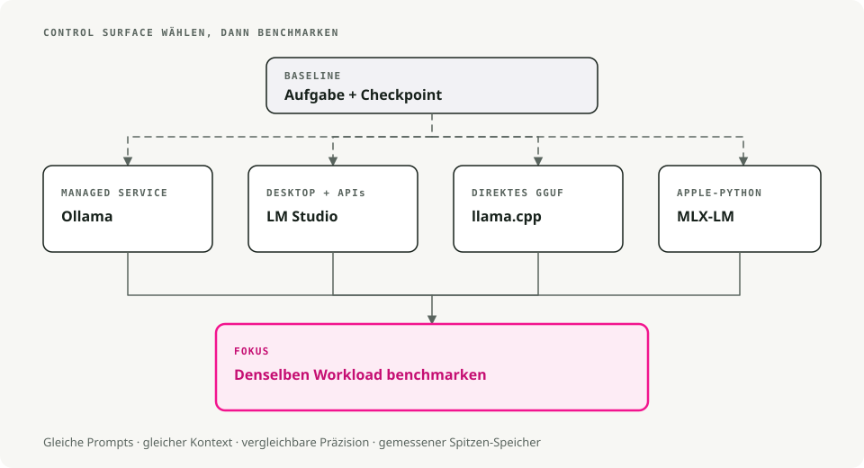

Automatische Übersetzung
Dieser Artikel wurde automatisch aus der englischen Originalversion übersetzt.
Lokale LLMs auf macOS: Ollama, LM Studio, llama.cpp, MLX und Apple Silicon
Jeden Prompt an eine Drittanbieter-API zu schicken, wird schnell mühsam, besonders wenn die Hälfte der Prompts Dinge sind wie „schreib diesen Absatz um“ oder „wie sieht das JSON-Schema dafür aus“. Lokale LLMs haben das für mich auf Apple Silicon schneller gelöst, als ich erwartet hatte. Ein 7B-Modell in 4-Bit-Quantisierung läuft problemlos auf einem MacBook mit 16 GB, und der Round-Trip endet direkt an der Tastatur.
Die offene Frage ist also, mit welcher App man das Modell ansteuert. Ollama, LM Studio, llama.cpp, MLX und einige andere packen im Kern ähnliche Inferenz-Engines und dieselben GGUF-Dateien ein. Der Unterschied liegt darin, wie viel Reibung zwischen dir und dem Modell steht: am einen Ende doppelklicken und tippen, am anderen aus dem Quellcode kompilieren und dann die Manpage lesen.
Zentrale Konzepte für lokale LLMs auf macOS
- Inferenz: das Ausführen des Modells zur Textgenerierung.
- Quantisierung (GGUF): eine Technik, um die Modellgröße mit minimalem Qualitätsverlust zu verkleinern. Du wirst Dateinamen wie
llama-3-8b-Q4_K_M.ggufsehen. Der TeilQ4bedeutet 4-Bit-Quantisierung, die deutlich weniger RAM als die vollständigen 16-Bit-Gewichte verwendet. - Apple Silicon (Metal): Apples M-Serie-Chips teilen sich den RAM zwischen CPU und GPU (Apple nennt das „Unified Memory“). Deshalb kann ein MacBook mit 32GB oder 64GB Modelle laden, für die man auf einem PC eine teure dedizierte GPU bräuchte.
Voraussetzungen
- Hardware: Ein Mac mit Apple Silicon (M1 bis M4) ist die richtige Wahl. Intel-Macs funktionieren, sind aber deutlich langsamer.
- RAM:
- 8GB: ausreichend für kleine Modelle (Mistral 7B, Llama 3 8B).
- 16GB+: komfortabel für größere Modelle und Multitasking.
- Speicherplatz: Modelle sind groß. Plane etwa 10-20GB für eine brauchbare Starter-Bibliothek ein.

1. Ollama - Die „Just Works“-Option
Download: ollama.com
Betrachte Ollama als das „Docker für LLMs“. Es verpackt die Engine llama.cpp in ein natives macOS-Paket, lädt Modelle bei Bedarf nach und leitet die Arbeit automatisch an Metal weiter. Du installierst es, führst einen Befehl aus und chattest los. Das ist der einfachste Weg, wenn du einfach ein funktionierendes LLM und einen HTTP-Endpunkt willst, auf den dein Code zeigen kann.
Beispiel-Workflow
# 1. Download and run Llama 3 (it auto-downloads if needed)
ollama run llama3
# 2. Use it in your code via the local API
curl http://localhost:11434/api/generate -d '{
"model": "llama3",
"prompt": "Explain quantum computing to a 5-year-old",
"stream": false
}'
Vor- und Nachteile
| ✅ Vorteile | ❌ Nachteile |
|---|---|
Einfachste Einrichtung (Drag-and-drop .dmg) |
Kernanwendung ist Closed Source |
Saubere CLI (ollama list, ollama pull) |
Weniger feingranulare Kontrolle über Generierungsparameter |
| Große Bibliothek vorkonfigurierter Modelle |
2. LM Studio - Der visuelle Explorer
Download: lmstudio.ai
LM Studio ist die GUI-first-Option. Es bietet einen Browser im App-Store-Stil für die direkte Suche auf HuggingFace, unterstützt neben GGUF auch Apples MLX-Format (das auf manchen Macs schneller sein kann) und stellt einen OpenAI-kompatiblen lokalen Server bereit. Bestehender Client-Code, der bereits mit OpenAI spricht, funktioniert deshalb meist direkt weiter.
Beispiel-Workflow
Du kannst das offizielle Python SDK verwenden oder jeden OpenAI-kompatiblen Client, der auf den lokalen Server zeigt:
# Using the official LM Studio SDK
from lmstudio import LMStudio
client = LMStudio()
response = client.complete(
model="llama-3-8b",
prompt="Write a haiku about debugging."
)
print(response.content)
Vor- und Nachteile
| ✅ Vorteile | ❌ Nachteile |
|---|---|
| Polierte, einfach zu bedienende Oberfläche | GUI ist Closed Source |
| Native Unterstützung für GGUF- und MLX-Modelle | Größerer Download (~750MB) |
| Eingebautes RAG (chatte mit deinen PDFs) |
3. llama.cpp - Das Tool für Power User
Repo: github.com/ggml-org/llama.cpp
Das ist die Engine, die fast alle anderen Tools verpacken. Wenn du maximale Performance willst, die neuesten Features direkt am Tag ihres Erscheinens oder ein LLM in deine eigene C++-Anwendung einbetten möchtest, ist das hier die Quelle. Es ist bare-metal und leichtgewichtig, aber der Preis ist, dass du alles selbst verwaltest: Downloads, Formate und Dutzende CLI-Flags.
Beispiel-Workflow
# 1. Install via Homebrew
brew install llama.cpp
# 2. Download a model manually (e.g., from HuggingFace)
huggingface-cli download TheBloke/Llama-3-8B-Instruct-GGUF --local-dir .
# 3. Run inference with full control
llama-cli -m llama-3-8b-instruct.Q4_K_M.gguf \
-p "Write a python script to sort a list" \
-n 512 \
--temp 0.7 \
--ctx-size 4096
Vor- und Nachteile
| ✅ Vorteile | ❌ Nachteile |
|---|---|
| Volle Kontrolle über jeden Parameter | Steile Lernkurve (nur CLI) |
| MIT-lizenziert (Open Source) | Manuelle Modellverwaltung |
| Sehr leichtgewichtig (<30MB) |
4. GPT4All - Privacy-First & RAG
Download: gpt4all.io
GPT4All baut auf zwei Ideen auf: Datenschutz und Dokumente. Das Hauptfeature, LocalDocs, lässt dich die App auf einen Ordner mit PDFs, Notizen oder Code zeigen und direkt mit den Inhalten chatten. Alles läuft offline ohne Telemetrie. Es ist der einfachste Weg, ein funktionierendes RAG-Setup auf deiner Maschine zu bekommen, ohne Code zu schreiben.
Vor- und Nachteile
| ✅ Vorteile | ❌ Nachteile |
|---|---|
| LocalDocs-RAG funktioniert out of the box | Nur GUI (kein Headless-Modus) |
| Komplett offline & privat | Höherer Ressourcenverbrauch als Ollama |
| Plattformübergreifend (Mac, Windows, Linux) |
5. KoboldCPP - Für Storyteller
Repo: github.com/LostRuins/koboldcpp
Ein Fork von llama.cpp, der auf Creative Writing und Tabletop-RPGs ausgerichtet ist. Es läuft als lokale Web-App mit Werkzeugen für Long-Form-Generierung: „World Info“, Character Memory und Story-Consistency-Hacks, die versuchen, das Modell über Tausende Tokens hinweg auf Kurs zu halten. Die Zielgruppe sind Autor:innen und Menschen, die textbasierte RPGs betreiben; wenn du hauptsächlich chatten oder coden willst, wirkt die reguläre UI schnell beengt.
Beispiel-Workflow
# 1. Download the single binary
wget https://github.com/LostRuins/koboldcpp/releases/latest/download/koboldcpp-mac.zip
# 2. Run it (launches a web server)
./koboldcpp --model llama-3-8b.gguf --port 5001 --smartcontext
Vor- und Nachteile
| ✅ Vorteile | ❌ Nachteile |
|---|---|
| Starke Werkzeuge für Creative Writing | Nischen-UI (nicht ideal für Coding/Chat) |
| Single-File-Executable (keine Installation) | AGPL-Lizenz (restriktiv für kommerzielle Nutzung) |
Ehrenvolle Erwähnung: MLX-LM
Wenn du Python-Entwickler:in auf Apple Silicon bist, schau dir MLX-LM von Apple an. Es ist ein Framework, das auf die M-Serie-Chips abgestimmt ist, und auf der passenden Hardware oft der schnellste Weg, ein Modell lokal auszuführen. Der Trade-off: weniger geführt als Ollama, mehr Python, weniger Guardrails.
Zusammenfassung: Welches Tool ist das richtige für dich?
Ein schneller Entscheidungsbaum:

Schnelle Vergleichstabelle
| Tool | Oberfläche | Schwierigkeit | Bestes Feature |
|---|---|---|---|
| Ollama | CLI / Menüleiste | ⭐ (Einfach) | „Just Works“-Erlebnis |
| LM Studio | GUI | ⭐ (Einfach) | Modellsuche & UI |
| GPT4All | GUI | ⭐ (Einfach) | Mit lokalen Dokumenten chatten (RAG) |
| KoboldCPP | Web UI | ⭐⭐ (Mittel) | Werkzeuge für Creative Writing |
| llama.cpp | CLI | ⭐⭐⭐ (Schwer) | Rohe Performance & Kontrolle |
Was du tatsächlich wählen solltest
- Starte mit Ollama, wenn du heute einfach etwas zum Laufen bringen willst.
- Greife zu LM Studio, wenn du Modelle lieber zuerst visuell durchsuchen möchtest.
- Wechsle zu llama.cpp, wenn du volle Kontrolle über die Inferenz brauchst.